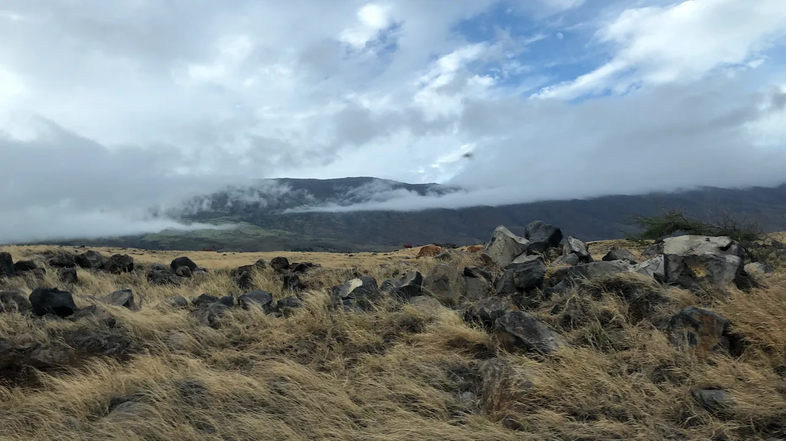

"I am the son of the Kgalagadi elephant And the Mmakgodumo crocodile Two worlds uninhabited, water and fire I am from the space between black magic and the holy cross The mountain and the cathedral are both shrines for my heart" - excerpt from my poem, I Am...I Am From
For most of my life, I have always straddled different worlds and realities. Each world and reality is a universe in its own right, and to hold multiple of those simultaneously makes me truly believe that we are divine beings. As my poem alludes, I was raised with the influences of Christianity and Sengwaketse Spirituality. I could quote Bible verses in my prayers to Jesus with the same ease with which I blew into the medicine man's bag of bones which allowed him to connect us to our ancestors. My home and school lives were another avenue where I had opposite realities. At school I was often considered the smartest and therefore at the top of the food chain. But at home, my family was at the bottom of the class structure. So I knew the privilege of being at the top and the frustration of being at the bottom. The ability to reconcile such disparate worlds is both a gift and a curse.
As I approach another full revolution around the sun, I find myself reflective on the influences of Sengwaketse culture and Californian culture―San Francisco Bay Area culture to specific―on how I live my life. Each of these cultures are vast and no amount of words could capture that, so I will resort to a simple example to illustrate the struggle a bit. At my age in Sengwaketse culture, there are expectations that I should be married or at least have children. But in the Bay Area, I am still considered relatively young for marriage and children―after all I am yet to start my billion dollar startup. To my people in my culture of origin, it is concerning that there are no signs of children in sight. To my people in my culture of refuge, the perceived seriousness with which I approach relationships is intense and suspicious. This is one curse of simultaneously living in two realities―the propensity to be partially understood.
The other curse of living in two worlds is that one does not get to develop depth of experience in any one world. To the people who are well versed in one world, I appear like the outsider who lacks understanding of basic things. As I say at times, I am too Mongwaketse for California and too Californian for Gangwaketse. If I were to assume my traditional role as uncle and lead the marriage negotiations for any of my nephews, my limited experience with the details of the culture would render me incompetent. In my life here, my limited experience with the details of the culture often has jokes and references flying over my head. But even when there is a lot that I may not know of each sub-universe, I am content with what I know. I know enough to navigate those worlds with relative ease.
The ease with which I am able to switch context between these worlds, is one of the gifts. I think it is what makes me empathetic―at least on the surface. When I am in California, I am able to relate to the norms, the values, and other artifacts of the culture. The same is true when I am in Southern Botswana. At a surface, this can make me come across as spineless and somewhat of a chameleon. But as the line from the poem reads, "I am from the space between black magic and the holy cross." My ability to relate with my Christian friends as easily as my ATR friends does not come from me belonging to both groups, but my belonging to a composite reality that is palatable for and reassuring to each group of people because they resonate with parts of my truth that reflect their world. So while I might appear shallow in not understanding the specifics of each culture, there is a depth hidden in plain sight.
As I look to my birthday and continue to create a life that is abundant with joy and peace, I accept that "The mountain and the cathedral are both shrines for my heart." I accept that I will never fully know the mountain and the cathedral like someone who is dedicated to studying just one. But I will still do my best to understand both as best as I can given my limitations. So while I will never be fully versed in Sengwaketse culture or Californian black culture, I will never stop seeking to know both as much as I can. And maybe someday, I can lead a marriage negotiations delegation with the finest drip and when I do the song and dance to seek admission at my nephew's bride to be's house, I would do so with more than just the two step that my Bangwaketse have perfected. As for my marriage and children, Bangwaketse calm down, I am still a child. There are no timelines in my world for marriage and children. Everything happens in its own time.
"My heart...my heart... Is the love of a widow The holy cross on a mountain, Black magic in a cathedral Come rain or shine, I am water, I am fire And I am from the elephant and the crocodile" - excerpt from my poem, I Am...I Am From
← Return to Blog